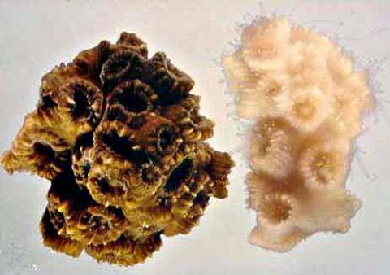

BACK
もっと知るために
環境省、生物多様性条約事務局、UNEP、NOAAなどの公式情報を活用し、最新の調査や保全活動を確認しましょう。
調査メモ
観察日：＿＿＿＿＿＿＿＿
場所：＿＿＿＿＿＿＿＿＿
見つけた生物：＿＿＿＿＿
気づいた変化：＿＿＿＿＿
海洋生物多様性普及・保護プロジェクト
© 2026 Marine Biodiversity Project
BACK
環境省、生物多様性条約事務局、UNEP、NOAAなどの公式情報を活用し、最新の調査や保全活動を確認しましょう。
観察日：＿＿＿＿＿＿＿＿
場所：＿＿＿＿＿＿＿＿＿
見つけた生物：＿＿＿＿＿
気づいた変化：＿＿＿＿＿
海洋生物多様性普及・保護プロジェクト
© 2026 Marine Biodiversity Project
ACTION
5小さな行動を、繰り返す。
継続できる選択が、長期的な変化につながります。
MARINE BIODIVERSITY
海洋生物多様性の普及と保護
01 / KNOW
海に暮らす生物の種類、生態系、遺伝子の違いと、それらのつながりを表します。
それぞれの環境が、食料、気候調整、文化、レクリエーションなど、私たちの暮らしを支えています。
02 / PROBLEM

03 / RESEARCH